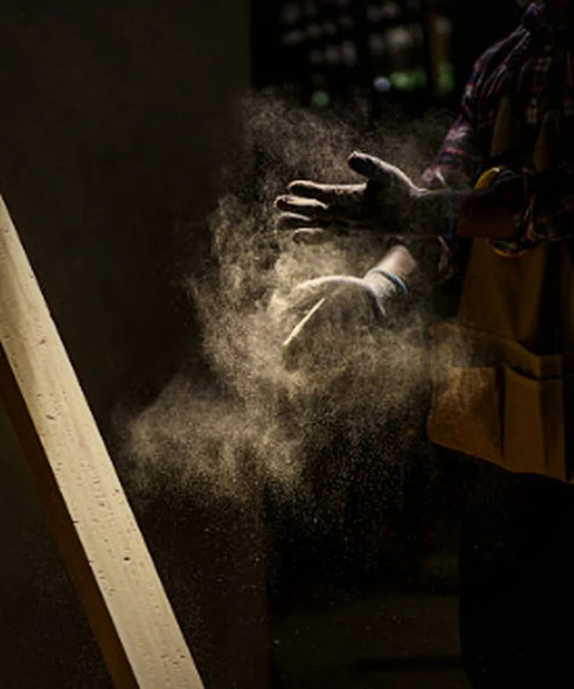

Peinture décorative.
Patines, badigeons, trompe-l'œil.
Un mur peint à la chaux ne rend pas la même lumière qu'un mur peint à l'acrylique : la matière est translucide, elle se creuse et se réchauffe selon l'heure. C'est un travail de peintre décorateur, pas d'applicateur — et ils ne sont pas nombreux dans la région.

RÉF. — MATIÈREMatière & patineImage d'illustration. Les photographies de nos chantiers prendront leur place ici à mesure des livraisons.
La matière, plus que la couleur.
Un badigeon de chaux, un glacis, une patine ou une laque ne se choisissent pas sur un nuancier : ils se font sur échantillon, au mur, à la lumière de la pièce. Une teinte validée sur un carton A4 en magasin n'a presque aucun rapport avec le même pigment étalé sur quinze mètres carrés.
Ces finitions sont aussi vivantes : elles bougent légèrement en séchant, se patinent avec le temps et supportent les retouches. Une peinture industrielle, elle, se raccorde mal — une reprise se voit toujours.
Ce que nous faisons pour vous.
Nous faisons réaliser des échantillons chez vous avant toute décision, sur le mur concerné et à plusieurs moments de la journée. C'est l'étape que tout le monde saute et qui coûte le plus cher quand on la saute.
Nous calons ensuite l'intervention en fin de chantier, après les enduits, le staff et les menuiseries, et nous protégeons ce qui est déjà posé. Un décor peint avant les autres corps de métier est un décor à refaire.
Badigeon de chaux
Chaux et pigments naturels, mats et profonds, perméables à la vapeur. Idéal sur murs anciens.
Patines & glacis
Superpositions translucides qui donnent de la profondeur aux murs, boiseries et portes.
Trompe-l'œil
Panneaux, ciels, perspectives et fresques peints à la main, sur mesure et sur place.
Laques
Boiseries et portes laquées, poncées entre couches, pour un tendu sans trace de reprise.
Peinture décorative : ce qu'on nous demande.
Badigeon à la chaux ou peinture classique : quelle différence ?
Une peinture acrylique forme un film à la surface du mur. Un badigeon à la chaux pénètre le support et le laisse respirer : la vapeur d'eau traverse au lieu d'être piégée. Sur un mur ancien, c'est décisif — un film étanche provoque des cloques et des salpêtres. Visuellement, la chaux a une profondeur mate que la peinture ne reproduit pas.
Quel est le prix d'une peinture décorative au m² ?
L'ordre de grandeur va de 80 à 200 € le m² selon la technique et le nombre de passes : un badigeon deux couches est dans le bas de la fourchette, une patine à glacis ou une laque poncée dans le haut. Un trompe-l'œil ou une fresque se chiffrent à l'ouvrage, pas au mètre carré.
Combien de temps tient un badigeon à la chaux ?
Sur un mur intérieur bien préparé, quinze à vingt ans sans intervention, et il se patine plutôt qu'il ne s'abîme. En extérieur, un badigeon de façade se rafraîchit tous les sept à dix ans selon l'exposition — plein sud et vent dominant usent plus vite.
Peut-on faire un trompe-l'œil sur un mur existant ?
Oui, à condition que le support soit sain et correctement préparé. Le peintre travaille à partir d'un dessin validé, reporté sur le mur puis peint sur place : comptez de quelques jours à plusieurs semaines selon la surface et le niveau de détail. C'est un ouvrage unique, chiffré au projet.
La peinture décorative convient-elle à une pièce humide ?
La chaux, oui — elle est naturellement basique et supporte bien l'humidité ambiante. Les patines à la cire et les laques, non : elles marquent sur les zones de projection. Pour une salle d'eau, on associe généralement un mur en chaux ou en tadelakt et une finition classique sur le reste.
Peinture décorative dans tout le département du 13.
Nos ateliers se déplacent sur l'ensemble des Bouches-du-Rhône, avec une majorité de chantiers entre Marseille, Aix-en-Provence et le pays d'Aubagne.
- Peinture décorative à Marseille
- Peinture décorative à Aix-en-Provence
- Peinture décorative à Aubagne
- Peinture décorative à Cassis
- Peinture décorative à La Ciotat
- Peinture décorative à Salon-de-Provence
- Peinture décorative à Martigues
- Peinture décorative à Gardanne
- Peinture décorative à Allauch
- Peinture décorative à Carry-le-Rouet
- Peinture décorative au Tholonet
- Peinture décorative à Ventabren
- Peinture décorative à Cabriès
- Peinture décorative à Saint-Rémy-de-Provence
- Peinture décorative à Istres
- Peinture décorative à Arles
Un projet à la hauteur
de ces artisans ?
Présentez-nous votre chantier en quelques mots. Nous revenons vers vous sous 48 heures.